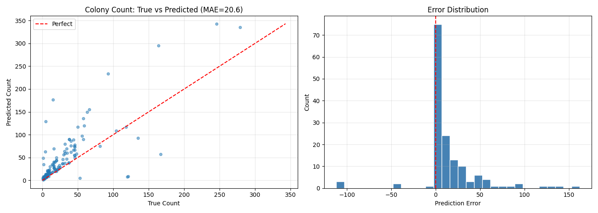

Regression-based evaluation of the U-Net model for bacterial colony counting using Mean Absolute Error.

Predictions for 0–50 colonies sit tightly on the perfect-prediction line, indicating strong segmentation performance in typical lab samples.
✓ ExcellentThe histogram is sharply peaked at zero, meaning the majority of predictions have near-zero error — most images are counted correctly.
✓ StrongSlight overestimation at counts above 100. This is expected — dense colony overlap causes segmentation boundaries to merge or split.
⚠ ModerateStrong positive correlation between true and predicted counts across the full range, confirming the model has learned meaningful colony features.
✓ Good Fit| Parameter | Value |
|---|---|
| Architecture | U-Net |
| Task | Colony Segmentation → Count Regression |
| Evaluation Metric | MAE (Mean Absolute Error) |
| MAE Score | 20.6 |
| Weights File | backend/models/unet/best.pt |
| Best Performance Range | 0 – 50 colonies per plate |
| Error Skew | Positive (slight over-counting at high density) |
| Integration | Hybrid mode (YOLO + UNet) in main analyzer |